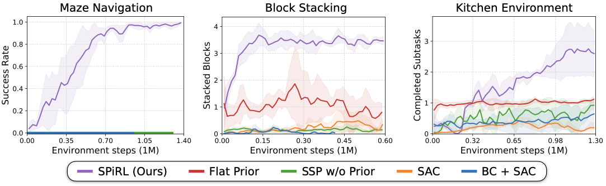

Intelligent agents rely heavily on prior experience when learning a new task, yet most modern reinforcement learning (RL) approaches learn every task from scratch. One approach for leveraging prior knowledge is to transfer skills learned on prior tasks to the new task. However, as the amount of prior experience increases, the number of transferable skills grows too, making it challenging to explore the full set of available skills during downstream learning. Yet, intuitively, not all skills should be explored with equal probability; instead information e.g. about the current environment state can hint which skills are promising to explore. In this work, we propose to implement this intuition by learning a prior over skills. We propose a deep latent variable model that jointly learns an embedding space of skills and the skill prior from offline agent experience. We then extend common maximum-entropy RL approaches to incorporate skill priors to guide downstream learning. We validate our approach, SPiRL (Skill-Prior RL), on complex navigation and robotic manipulation tasks and show that learned skill priors are essential for effective transfer of skills from rich datasets.
Overview
Our goal is to leverage large, unstructured datasets of agent experience for accelerating downstream reinforcement learning. Our approach, SPiRL (Skill-Prior RL), tackles this problem in two stages: first we learn a continuous representation of skills and a prior over these skills, then we leverage them for guiding reinforcement learning on a new downstream task.
We propose a model for jointly learning (1) a continuous embedding space of skills and (2) a prior over skills from an offline dataset of unstructured agent experience. We define skills as action trajectories of fixed length from the training sequences and train a generative model over randomly cropped action trajectories by maximizing the Evidence Lower Bound (ELBO). Additionally, we train a skill prior network to approximate the skill posterior distribution over the learned skill embedding space given the current state.
Skill Prior Guided Reinforcement Learning
Once the skill embedding space and skill prior are learned, we can leverage them for efficient learning of new downstream tasks. We propose a hierarchical policy architecture in which a high-level policy outputs skill embeddings which get translated into executable actions using the pre-trained decoder model. To guide exploration during downstream learning we regularize the policy's output distribution towards the learned skill prior.
We evaluate our approach on one navigation and two robot manipulation environments. In each environment, we have a diverse set of training tasks for collecting large datasets of agent experience (see top row), which we use to train skill embedding and skill prior. We then leverage them to guide learning on new downstream tasks (bottom row), which require generalization to a larger maze, an environment with more blocks and novel combinations of the learned kitchen manipulation skills.
Exploration behavior of our method vs. alternative transfer approaches on the downstream maze task. Through learned skill embeddings and skill priors our method can explore the environment more widely than randomly sampling learned skills ("Skills w/o Prior") or learning priors over primitive actions ("Flat Prior"). Uniformly random exploration in primitive action space ("Random") is not able to coherently explore the maze. We visualize positions of the agent during 1M steps of exploration rollouts in blue and mark episode start and goal positions in green and red respectively.
Long-Horizon Manipulation with Skill Priors
SAC
Flat Prior
SSP (no prior)
SPiRL (ours)
Rollouts from the trained policies on the challenging kitchen manipulation task. The agent needs to perform four subtasks: open microwave, move kettle, turn on stove, switch on light. Since the agent only receives reward upon completion of a subtask, conventional model-free RL (SAC) struggles to learn the task. A learned prior over primitive actions ("Flat Prior") or learned skill embeddings ("Skill Space Policy w/o Prior") can improve exploration, but only our approach learns to solve all four subtasks.
Quantitative Results

Source Code
We have released our implementation in PyTorch on the github page. Try our code!
@inproceedings{pertsch2020spirl,
title={Accelerating Reinforcement Learning with Learned Skill Priors},
author={Karl Pertsch and Youngwoon Lee and Joseph J. Lim},
booktitle={Conference on Robot Learning (CoRL)},
year={2020},
}
{kind=link}
{kind=link}
{kind=link}
{kind=link}